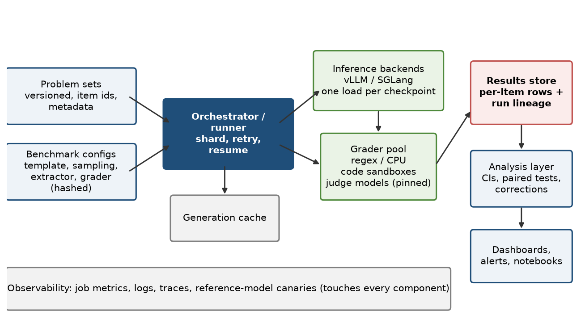

Eval study notes · Coding practice set
An eval platform is built from four things: “benchmark configurations, problem sets, graders, and evaluation runners”. Those four words are a decent summary of the architecture of every serious eval system, open or internal, and this chapter builds each of them up from the naive version an engineer writes on day one to the version a lab ends up with after a year of painful lessons. If you can draw this picture on a whiteboard and explain why each box exists, you have most of a system-design answer.
Imagine a researcher asks you to “add GSM8K to the evals”. The first version is a script: load the dataset from Hugging Face, loop over the questions, format each one into a prompt with a few worked examples in front, call the model, pull the number out of the answer with a regex, compare to the reference, print the accuracy. It works, it takes an afternoon, and it is roughly how most benchmarks begin life.
Now run that script for a year across fifty benchmarks, hundreds of checkpoints and twenty researchers, and watch what goes wrong. Someone edits the few-shot examples and scores jump two points with no change to the model. The Hugging Face dataset gets a new revision that fixes some labels, and old and new numbers are silently compared. The regex misses answers formatted as “” and the new reasoning model looks worse than it is. A run dies halfway through a 10,000-item benchmark and restarts from scratch. Two researchers get different numbers for the same checkpoint because one used temperature 0 and the other 0.7. Someone asks whether checkpoint 4,200 got the same questions wrong as checkpoint 4,000 and nobody can answer, because only the accuracy was saved. Each of these failures motivates one piece of the architecture below.
A problem set is the collection of items an eval runs on. The first lesson is that each item needs a stable identity. A stable item id, ideally a content hash plus a human-readable key, is what makes paired comparisons (Chapter 8), per-item regression analysis, deduplication and contamination checks possible. The second lesson is that items need metadata: the cluster they belong to (passage, repository, environment) for clustered standard errors; the date the item was created or published, for contamination filtering by training cutoff; the source and licence; difficulty or category tags for slicing results; and, for code and agent tasks, a reference to the environment or container image needed to grade them.
The third lesson is that problem sets are versioned artefacts, not live downloads. A benchmark revision is pinned by hash, stored in the platform’s own storage, and never changes under a given version label. Fixing label errors creates a new version. Private held-out sets are stored with access control, because a leaked test set is a contaminated test set.
The configuration is where every choice that can move a score is written down, so that “GSM8K 8-shot chain-of-thought v3” means exactly one thing. A config names the problem set and its version; the split; the prompt template, including the chat template or raw-text format, the system prompt, and the few-shot exemplars and their order; the sampling parameters (temperature, top-p, maximum new tokens, stop sequences, number of samples per item); the answer extractor; the grader and its version; the metrics to compute (accuracy, pass@k, avg@k, F1, and so on) and how to aggregate across items and sub-tasks.
In EleutherAI’s lm-evaluation-harness, the most widely used open framework, this is literally a YAML file per task: it points at a Hugging Face dataset, gives Jinja-style templates for the input and target, chooses an output type, lists “filters” (regex extraction, take-first, majority vote) that post-process generations, and lists metrics with their aggregation functions. It also exposes a crucial distinction between request types. A “loglikelihood” request asks the model how probable each candidate answer is given the prompt, which is how multiple-choice benchmarks are scored for base models without generating anything; a “loglikelihood_rolling” request computes perplexity over a document; a “generate_until” request samples text until a stop condition. These have completely different compute profiles, which matters in Chapter 4. UK AISI’s Inspect framework, which many safety and agent evaluations now use, structures the same idea differently: a Task combines a dataset, a “solver” (the chain of steps that produce the model’s answer, which may include tool use, multiple turns or an agent loop) and a “scorer”. The difference reflects the shift from single-prompt benchmarks to agentic ones, where the “prompt template” becomes a whole program.
The principal-level point is that configs should be data, not code, wherever possible, so they can be diffed, reviewed, hashed into the run identity, and validated by schema before an expensive run starts. Where code is unavoidable (custom extractors, agent scaffolds), it is versioned and its hash goes into the run identity too.
The runner is the orchestration layer. Given a config and a model (a checkpoint path, or an endpoint), it has to get every item answered and graded, efficiently and fault-tolerantly, and write the results somewhere durable.
A runner at scale does several things that the afternoon script did not. It provisions or locates the inference backend: for a checkpoint mid-training, that usually means launching an inference server such as vLLM or SGLang on some GPUs with the right parallelism, loading the weights, and waiting for health checks. It shards items across workers and keeps the inference engine saturated with concurrent requests. It retries transient failures with backoff and distinguishes them from deterministic failures that will never succeed. It checkpoints progress so that a preempted job resumes rather than restarts, which in practice means writing per-item results as they complete and skipping already-completed items on restart. It caches generations keyed by the full request (model, prompt, sampling parameters, seed), so that changing only the grader does not require regenerating 10,000 answers. It enforces timeouts per item, because a reasoning model occasionally produces a 64,000-token chain of thought and a code sandbox occasionally hangs. And it emits metrics and logs for every stage, which is the raw material for Chapter 5.
Graders are important and treacherous enough to get their own chapter. Architecturally, the key decision is to separate generation from grading. Generating answers is GPU-bound and expensive; grading is often CPU-bound (regex, code execution) or calls a different model (a judge). Separating them lets each scale independently, lets you re-grade stored generations when a grader is fixed without touching the GPUs, and lets you run many graders on one set of generations. Code-execution graders also need isolation, because running model-written code is running untrusted code, so they run in sandboxes, typically containers with no network, CPU and memory limits, and timeouts.
This is the box that the naive script omitted and the one that pays for itself the fastest. Every run writes one row per item per sample: run id; config hash; model or checkpoint id; item id; sample index; the exact prompt (or its hash with the text stored elsewhere); the raw response; extracted answer; score; grader version; token counts; latency; and any error. Run-level metadata records the inference engine version, hardware, seeds and the git commit of the eval code.
With that store, almost every question researchers ask becomes a query. Which items did checkpoint B newly fail? What is the paired difference and its interval? Which items flip between correct and incorrect across reruns (a direct measure of nondeterminism)? Did the regression come from the model or from a grader version change? Aggregate scores on a dashboard are just views over this table. At frontier scale, this is large (millions of rows per day with long text fields), so it typically lives in a columnar store or data warehouse with the long responses in object storage.
On top of the results store sits the layer researchers actually see: dashboards of scores per checkpoint per benchmark, comparisons between runs, drill-downs into individual failures. Part II of this book is largely about what belongs in this layer: intervals on every number, paired comparisons, multiple-comparison corrections on what gets highlighted, and signal-to-noise per benchmark. Increasingly, labs also let researchers query results in notebooks directly, so a clean, documented schema matters as much as the dashboard.

It is worth knowing that Microsoft Research published an open evaluation framework called Eureka (Eureka ML Insights, September 2024) with an accompanying report on evaluating frontier models across capabilities. Its design centres on composable pipelines of data processing, inference, extraction and evaluation stages, which is the same decomposition as above, and its report emphasises reporting variance across repeated runs and failure analysis on subcategories, not single headline numbers. Azure AI Foundry also has an evaluation SDK aimed at customers evaluating their own applications, which is a different problem (application quality and safety rather than training-time checkpoint evaluation). Most labs’ internal stacks are not public; knowing these open frameworks exist lets you ask a good question about whichever stack you meet.
Those four nouns map to an architecture you should be able to draw. Problem sets are versioned, access-controlled data with stable item ids and metadata for clustering, dates and slicing. Benchmark configs freeze every free choice and are hashed into the run identity. Runners provision inference, shard, retry, resume, cache generations and time out stragglers. Graders are separated from generation so each scales independently and stored answers can be re-graded. And a per-item results store, the piece naive systems skip, is what makes paired statistics, regression triage and reproducibility possible.